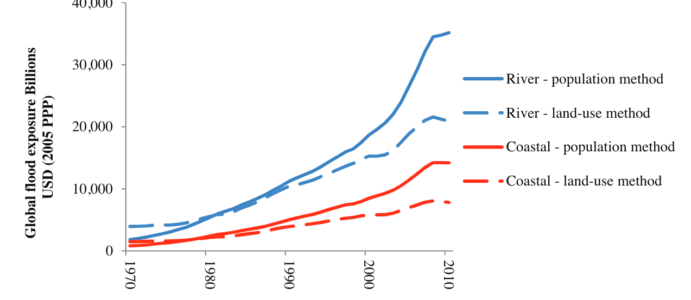
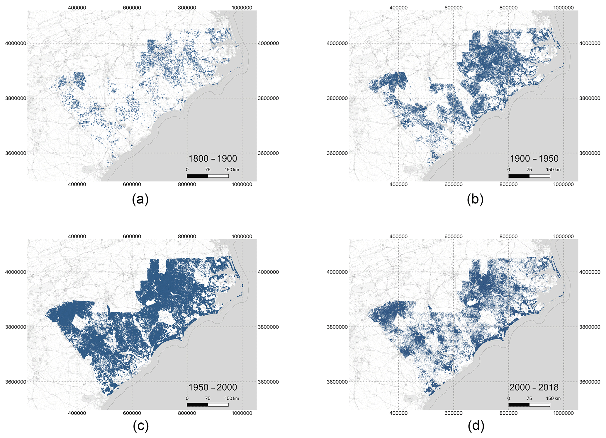
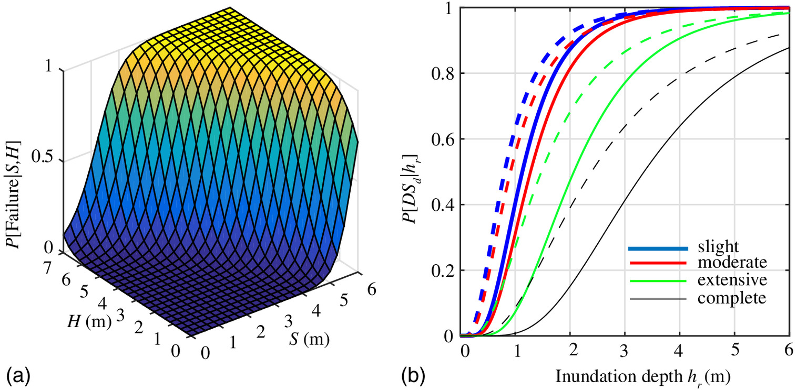
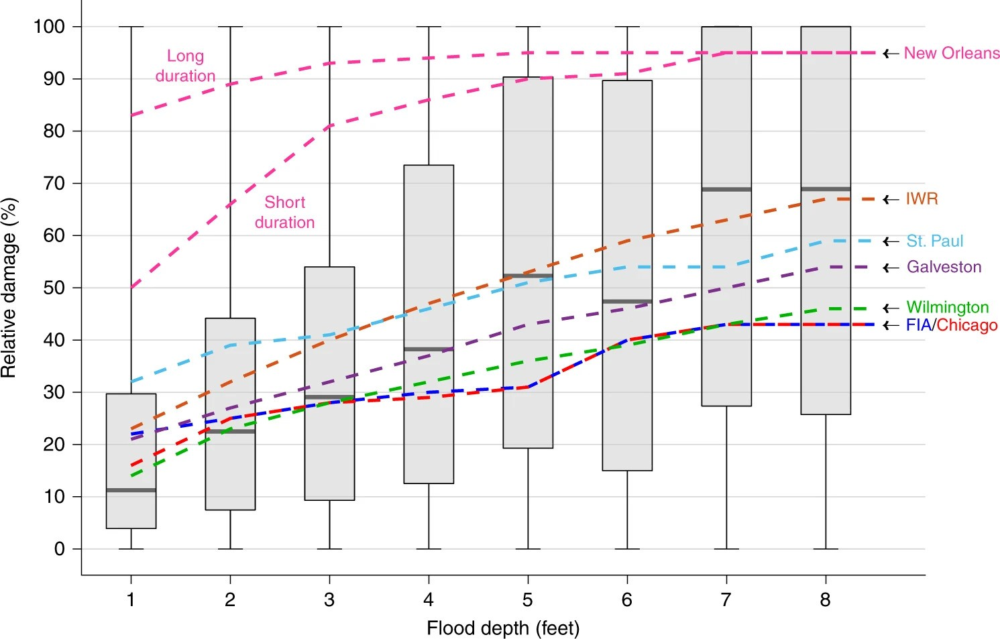
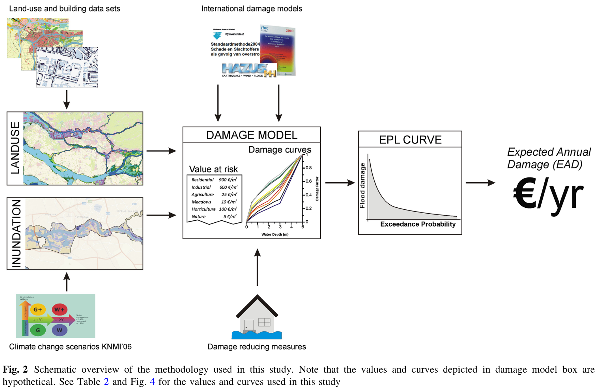
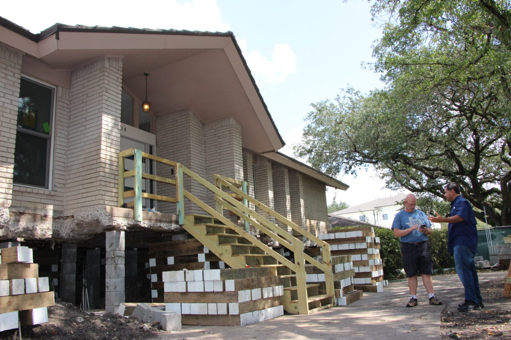

Lecture
Wednesday, January 21, 2026
You own a house in a flood zone.
An insurance company offers you a policy.
How do they decide what to charge you?
Today: The math behind flood risk pricing.
A house faces two possible flood scenarios this year:
| Scenario | Probability | Damage |
|---|---|---|
| No flood | 80% | $0 |
| 3 ft flood | 20% | $50,000 |
What’s the expected annual damage?
(30 seconds to think)
\[E[\text{Damage}] = 0.8 \times \$0 + 0.2 \times \$50,000 = \$10,000\]
This simple calculation is the core of risk analysis.
Today: How do we do this when floods and damages are continuous?
Today
Risk Analysis Vocabulary
From Components to Risk
Convolution: Hazard → Damages
Extreme Value Theory
The House Elevation Problem
Wrap Up
Hazard: The physical event or phenomenon
Key insight: Hazards are characterized by probability distributions, not single values.
Exposure = assets that could be affected


Figure 2: Houston’s built footprint 1800-2018. Development into flood-prone areas increases exposure. Source: Tedesco et al. (2020)
Vulnerability: Propensity to suffer damage given exposure to hazard
Important distinction:

Figure 3: Fragility surfaces (a) and curves (b) show probability of damage given hazard intensity. Source: Gidaris et al. (2017)
For floods, depth-damage functions quantify vulnerability:

Figure 4: Empirical depth-damage from NFIP claims data. Boxplots: Wing et al. (2020) analysis. Lines: USACE engineering curves.
From the depth-damage data:
Today
Risk Analysis Vocabulary
From Components to Risk
Convolution: Hazard → Damages
Extreme Value Theory
The House Elevation Problem
Wrap Up
The fundamental equation:
\[\text{Damage} = \text{Vulnerability}(h) \times \text{Exposure}\]
where \(h\) is the hazard intensity (e.g., flood depth).
For expected damages, we integrate over the hazard distribution:
\[E[\text{Damage}] = \int \text{Vulnerability}(h) \times \text{Exposure} \times p(h) \, dh\]

Figure 5: From hazard and exposure data through damage models to expected annual damage (EAD). Source: de Moel et al. (2014)
A city is deciding whether to build a new seawall.
Identify the hazard, exposure, and vulnerability.
Discuss with a neighbor for 60 seconds.
Today
Risk Analysis Vocabulary
From Components to Risk
Convolution: Hazard → Damages
Extreme Value Theory
The House Elevation Problem
Wrap Up
We have:
We want:
This transformation is called convolution.
Hazard Distribution
Damage Function
Damage Distribution:
Expected damage = $0.5(0) + 0.3(10k) + 0.2(100k) = $23,000
For any nonlinear function \(f\):
\[E[f(x)] \neq f(E[x])\]
This will be on assessments. Know it.
Hazard:
Damage function:
\(D(E[h]) = D(5) = \$20,000\)
\(E[D(h)] = 0.5(\$5k) + 0.5(\$90k) = \$47,500\)
The difference matters: $27,500 underestimate.
For continuous distributions, expected damage is an integral:
\[E[D] = \int D(h) \cdot p(h) \, dh\]
This integral is intractable for nontrivial damage functions or probability density functions.
Solution: Monte Carlo integration approximates it with samples.
If we draw \(N\) samples \(h_1, h_2, \ldots, h_N\) from \(p(h)\):
\[\frac{1}{N} \sum_{i=1}^{N} D(h_i) \xrightarrow{N \to \infty} E[D]\]
The sample average converges to the true expected value.
More samples → better approximation
Once we have samples, we can compute any statistic:
This is exactly what you’ll implement on Friday.
Today
Risk Analysis Vocabulary
From Components to Risk
Convolution: Hazard → Damages
Extreme Value Theory
The House Elevation Problem
Wrap Up
Most flood damage comes from rare, extreme events.
The problem: Normal distributions underestimate extreme risks.
We need specialized tools for modeling the tails of distributions.
The Generalized Extreme Value (GEV) distribution is designed for annual maxima.
Three parameters:
\(\xi > 0\) means fat tails: extreme events are more likely than a normal distribution predicts.
In lab on Friday, you will:
This is uncertainty quantification in action.
Today
Risk Analysis Vocabulary
From Components to Risk
Convolution: Hazard → Damages
Extreme Value Theory
The House Elevation Problem
Wrap Up
A homeowner faces a choice:
How high should I elevate my house?
Higher elevation = more upfront cost, but less future flood damage.

Finding the optimal elevation requires:
We’ll use the house elevation problem throughout the course:
| Week | Topic | What We Add |
|---|---|---|
| 2 | Hazard-Damage Convolution | Basic Monte Carlo |
| 3-5 | Risk Metrics | EAD, VaR, CVaR |
| 6-8 | Decision Analysis | Optimal static decisions |
| 10-13 | Deep Uncertainty | Robust optimization |
Today
Risk Analysis Vocabulary
From Components to Risk
Convolution: Hazard → Damages
Extreme Value Theory
The House Elevation Problem
Wrap Up
On Friday, you will:
James Doss-Gollin